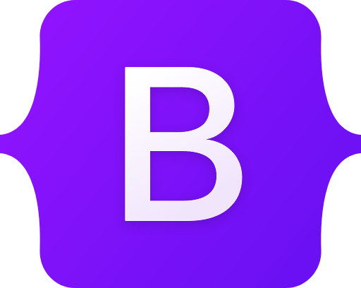

Frontend development involves creating the visual and interactive aspects of a website or application that
users engage with directly. It combines design principles with coding to ensure a seamless user experience.
Frontend developers use technologies like HTML, CSS, and JavaScript, along with frameworks and libraries
such as React, Angular, or Vue.js, to build responsive and user-friendly interfaces. Their work bridges the
gap between design and functionality, ensuring that applications are aesthetically pleasing, accessible, and
performant across various devices and browsers.
Basics - HTML & CSS
HTML
HTML (HyperText Markup Language) is the standard language used to create the structure and content of a
webpage. It organizes the layout of elements such as headings, paragraphs, images, links, and lists by using
a system of tags and attributes. HTML acts as the foundation of any webpage, ensuring that browsers can
interpret and render the content for users. It is essential for defining the semantic structure, which
improves accessibility and SEO.
CSS
CSS (Cascading Style Sheets) is a styling language used to control the appearance and layout of HTML
elements on a webpage. It enables developers to apply colors, fonts, margins, padding, and animations,
transforming the raw structure provided by HTML into visually appealing and user-friendly designs. CSS
supports responsive design, ensuring that webpages adapt seamlessly to different devices and screen sizes,
making it a critical tool for modern frontend development.
Frameworks
Frameworks in frontend development are pre-written code libraries that provide a structured foundation
for
building user interfaces efficiently. They streamline development by offering reusable components,
standardized practices, and tools for handling common tasks like DOM manipulation, state management, and
routing. Frameworks such as Bootstrap, React and Angular help developers create responsive, dynamic, and
scalable applications with less effort and more consistency. They also simplify collaboration by
enforcing
design patterns and reducing redundancy, enabling teams to focus on enhancing functionality and user
experience.
Bootstrap

Bootstrap is an HTML, CSS and JS library that focuses on simplifying the development of informative
web
pages (as opposed to web applications). The primary purpose of adding it to a web project is to
apply
Bootstrap's choices of color, size, font and layout to that project. As such, the primary factor is
whether the developers in charge find those choices to their liking. Once added to a project,
Bootstrap
provides basic style definitions for all HTML elements. The result is a uniform appearance for
prose,
tables and form elements across web browsers. In addition, developers can take advantage of CSS
classes
defined in Bootstrap to further customize the appearance of their contents. For example, Bootstrap
has
provisioned for light- and dark-colored tables, page headings, more prominent pull quotes, and text
with
a highlight.
React
React (also known as React.js or ReactJS) is a free and open-source front-end JavaScript library
that aims to make building user interfaces based on components more "seamless". It is maintained by
Meta
(formerly Facebook) and a community of individual developers and companies.
React can be used to develop single-page, mobile, or server-rendered applications with frameworks
like
Next.js and Remix. Because React is only concerned with the user interface and rendering components
to the DOM, React applications often rely on libraries for routing and other client-side
functionality. A key advantage of React is that it only re-renders those parts of the page that
have changed, avoiding unnecessary re-rendering of unchanged DOM elements.
Angular
Angular is a TypeScript-based free and open-source single-page web
application framework. It is developed by Google and by a community of individuals and corporations.
Angular is a complete rewrite from the same team that built AngularJS. The Angular ecosystem
consists of
a diverse group of over 1.7 million developers, library authors, and content creators. According to
the Stack Overflow Developer Survey, Angular is one of the most commonly used web frameworks.
Angular
uses a component-based architecture, which allows developers to build encapsulated, reusable user
interface elements. Each component encapsulates its own HTML, CSS, and TypeScript, making it easier
to
manage and test individual pieces of an application. Angular supports two-way data binding, which
synchronizes data between the model and the view. This ensures that any changes in the view are
automatically reflected in the model and vice versa.
Frequently Asked Questions
Do I need to know programming before starting frontend development?
No prior programming knowledge is required to begin. Start with HTML and CSS, which are markup and
styling languages, and then move to JavaScript for programming.
What tools do frontend developers use?
Common tools include: code editors (e.g VS Code), browsers with developer tools for debugging, version
control (e.g. Git, GitHub).
What is responsive design, and why is it important?
Responsive design ensures a website works well on devices of all sizes, from desktops to smartphones.
It improves user experience and is critical in today's mobile-first world.
Conclusion
In conclusion, frontend development is an exciting and ever-evolving field that combines creativity with
technical skills to create engaging and user-friendly web experiences. By mastering core technologies like
HTML, CSS, and JavaScript, and leveraging frameworks and tools, developers can build responsive,
interactive, and visually appealing interfaces. The demand for skilled frontend developers continues to grow
as businesses prioritize digital presence and user experience. Whether you're just starting or looking to
advance, frontend development offers countless opportunities for innovation and career growth. With
dedication, practice, and a passion for learning, anyone can succeed in this dynamic domain.